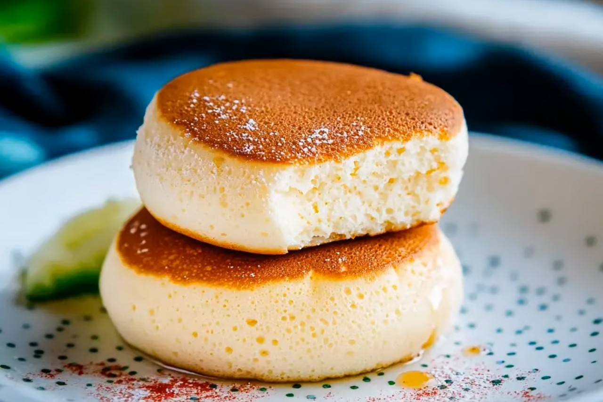

Home
Japanese Pancakes

Description
Experience the delight of fluffy Japanese pancakes that are light, airy, and melt in your mouth.
These pancakes are perfect for a special breakfast or brunch, offering a unique twist on the traditional pancake.
With a few simple ingredients and a bit of technique, you can create these delightful treats at home.
Ingredients
- 2 Eggs
- 2 tablespoon Milk
- ½ teaspoon Vanilla extract
- ¼ cup All-purpose flour
- ½ teaspoon Baking powder
- ¼ teaspoon Salt
- 2 tablespoon Sugar
Steps
- Separate the egg whites and yolks into two bowls..
- In the bowl with the yolks, add milk and vanilla extract. Whisk until combined.
- Sift flour, baking powder, and salt into the yolk mixture. Whisk until smooth.
- In the bowl with the egg whites, add sugar and beat until stiff peaks form.
- Gently fold the egg whites into the yolk mixture in three parts, being careful not to deflate the batter.
- Heat a non-stick pan over low heat and lightly grease it. Pour the batter into the pan, forming small circles. Cover and cook for 4-5 minutes on each side until golden brown and cooked through.
- Serve immediately with your favorite toppings.